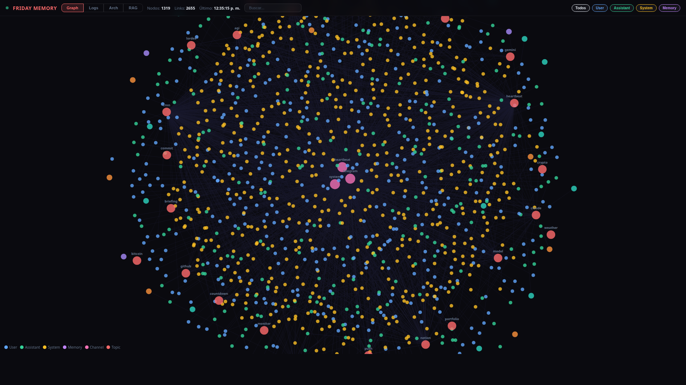
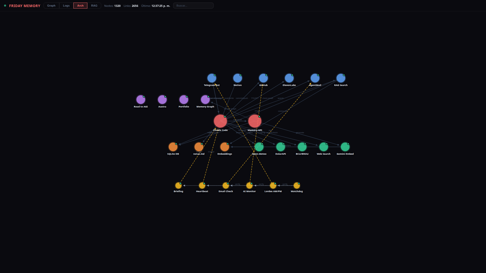

Friday — A 24/7 AI Assistant Built Entirely on Claude Code
An always-on personal AI system using only Claude Code CLI ($100/month) and Telegram — no custom AI, no cloud VMs, no fine-tuning.
What Is This?
This is a personal AI assistant that runs 24/7 on a standard Windows, Linux, or macOS machine. It communicates via Telegram, runs scheduled tasks autonomously, manages files and projects, and maintains persistent memory across sessions. The entire system is powered by Claude Code (Anthropic's CLI agent) on the $100/month Max Plan — no custom AI backend, no fine-tuned models, no orchestration framework. The only custom code is a lightweight Flask server for persistent memory storage.
How It Works
Claude Code sits at the center, connecting to external services through MCP (Model Context Protocol) plugins and shell tools. A CLAUDE.md file acts as the system prompt, defining behavior, available tools, and cron schedules. Scheduled tasks run autonomously without human input.
User (Telegram) ---> Claude Code (with MCP plugins) | |--> Memory API ---> SQLite (conversations, memories, embeddings) |--> Knowledge Base (MCP) ---> Notes, wiki, structured data |--> GitHub ---> Repos (push, commit, PR) |--> Voice API ---> Text-to-speech / Speech-to-text |--> Email (MCP) ---> Send, receive, forward |--> Web Search / Fetch ---> News, research, data |--> Cron system ---> Recurring autonomous jobs |--> Local tools ---> Shell, scripts, system utilities
Why Not Use an Agent Framework?
Projects like OpenClaw, NemoClaw, and other agent frameworks are impressive, but they add layers of complexity: custom runtimes, orchestration code, deployment pipelines, and often their own API costs. This approach is different.
Claude Code already is the runtime. It has native tool use, MCP plugin support, cron scheduling, sub-agent spawning, file I/O, git, and shell access built in. There is no glue code between the LLM and the tools — Claude Code handles it all natively.
The philosophy: stay within a single subscription, respect the provider's Terms of Service, and avoid bolting on external LLM APIs or custom agent infrastructure. One plan, one CLI, one model — and let the model do what it was designed to do. The result is a system that is simple to maintain, easy to reproduce, and costs exactly $100/month.
The Stack
| Component | Technology |
|---|---|
| Brain | Claude Code CLI (Opus 4.6, 1M context) |
| Interface | Telegram (via MCP plugin) |
| Memory | Flask + SQLite + embedding-based RAG |
| Voice | TTS/STT API (ElevenLabs or equivalent) |
| Scheduling | Claude Code built-in cron system |
| Cost | $100/month (Anthropic Max Plan) |
Screenshots
The memory server includes a visual web endpoint that renders all stored logs, memories, and entities as interactive graph nodes. This implementation is called Friday, but the system can be renamed to anything the user wants — the name is just a variable in the CLAUDE.md configuration.


Capabilities
- Scheduled briefings — weather (Open-Meteo API), forex/crypto (DolarAPI, ExchangeRate), AI news (WebSearch), movies (YTS API)
- Autonomous monitoring — scan 60+ orgs on HuggingFace API, blogs, and aggregators for new AI model releases
- Note-taking and knowledge management — save links, text, and structured data to Notion (MCP) and local markdown
- Voice messages — receive and transcribe audio (ElevenLabs Scribe STT), respond with synthesized speech (ElevenLabs TTS)
- Video analysis — download, transcribe (YouTube subs / ElevenLabs), and generate structured reports via LLM (Groq / OpenRouter API)
- Email handling — check, draft, send, and forward emails (AgentMail MCP)
- Git operations — commit, push, create PRs, manage repositories (GitHub API + git CLI)
- Web research — search, fetch, summarize, and report back (WebSearch + WebFetch tools)
- Self-healing crons — monitors its own scheduled jobs and recreates any that expire (CronCreate/CronList built-in)
- Proactive messaging — the assistant reaches out first: casual check-ins, reminders for things you mentioned and forgot, follow-ups on pending tasks. Not just reactive — it initiates conversations based on memory and context
Memory Server
The memory system is a ~800-line Flask + SQLite server that handles everything: conversation logging, long-term memory, entity tracking, key-value storage, and RAG with vector embeddings. No external vector database — embeddings are stored as BLOBs in the same SQLite file.
Core features
- Conversation logging — every message stored with timestamp, role, channel, and auto-classified importance score (0.0-1.0)
- Importance scoring — messages are auto-tagged at insert time: notes/saves = 1.0, project actions = 0.8, URLs/searches = 0.6, user messages = 0.4, assistant = 0.2, system/heartbeats = 0.1
- Long-term memory — typed entries (user, feedback, project, reference) with free-text search
- Semantic search — cosine similarity over embedding vectors (3072 dimensions)
- Hybrid search — FTS5 keyword matching + semantic search combined via Reciprocal Rank Fusion, weighted by importance
- Weekly summarization — cron compresses old logs into weekly summaries without deleting originals. Search results are enriched with the associated weekly summary
- Entity tracking — people, companies, tools, concepts with search
- Key-value store — server-side persistence for UI state (e.g. node positions)
Web visualization
The server also hosts a single-page web app at /graph with four interactive tabs:
- Graph — D3.js force-directed visualization of all conversations, memories, and entities as interactive nodes. Color-coded by type, draggable, zoomable
- Logs — chronological view of all conversation logs with collapsible date groups and search
- Architecture — system diagram with draggable nodes showing all components and connections (positions persist server-side via /kv endpoint)
- RAG — semantic search dashboard with hybrid search, embedding stats, and result previews
Self-Evolving System
The assistant doesn't just follow instructions — it learns from its own behavior and improves over time.
Five systems work together to make this happen:
- Skill Acquisition — When the assistant solves a new type of task, it extracts the pattern and saves it as a reusable skill. Next time a similar request comes in, it already knows how to handle it. Skills are stored with trigger patterns and step-by-step procedures, and usage is tracked.
- Daily Self-Reflection — Every night, a cron job reviews the day's conversation logs and asks: what went well? what went wrong? what patterns emerge? The conclusions are stored as reflections and feed back into future behavior.
- Preference Learning — Instead of relying only on explicit corrections, the system periodically analyzes all past feedback looking for repeated patterns. If the user corrects the same type of mistake multiple times, it automatically infers a rule and applies it going forward.
- World Model — The system builds an internal model of the user's behavior over time: when they're most active, what topics recur on certain days, what correlations exist between events. These insights are stored with confidence scores and expiration dates.
- Self-Improvement Proposals — When the system detects something that could work better (a keyword list, a cron schedule, a scoring function), it creates a formal proposal with a description and diff preview. Changes are never applied automatically — the user approves or rejects each one via Telegram.
All of this runs on the same memory server with no additional infrastructure. The data is visible in the Memory Graph's "Brain" tab — a dashboard showing learned skills, active preferences, daily reflections, world model insights, and pending proposals.
The result is a system that gets better at its job every day — not because the underlying model changes, but because it builds a growing library of skills, preferences, and behavioral patterns on top of it. The model stays the same. The assistant evolves.
The $100 Question
This entire system runs on a single $100/month Anthropic Max Plan. No cloud VMs running inference. No LangChain, no AutoGPT, no agent framework. Just Claude Code on a Linux machine with MCP plugins.
The key insight: Claude Code is not just a coding assistant — it is a general-purpose autonomous agent runtime. Give it tools, instructions, and a schedule, and it becomes a full 24/7 assistant. The $100 plan provides (almost) unlimited access to one of the most capable AI models available, with native tool use and long context. That is enough.
Set It Up Yourself
Download the setup guide below and pass it to a fresh Claude Code session. It will walk through every step autonomously — creating the Telegram bot config, memory server, API keys, and CLAUDE.md. You just approve and follow along.
Then open Claude Code and type:
Read the file ~/Downloads/SETUP.md and follow every step in it to set up a 24/7 AI assistant on this machine. Ask me for confirmation before each major step.That's it. Claude Code reads the guide and walks you through the entire setup autonomously.
The setup file is a step-by-step autonomous guide that Claude Code follows to bootstrap the entire system: Telegram bot, memory API server, CLAUDE.md configuration, cron jobs, and first-run verification. The user only needs to provide API keys and approve actions. No manual coding required.
Once everything is set up, start the assistant with:
claude --channels plugin:telegram@claude-plugins-official --dangerously-skip-permissionsThat's it. Claude Code reads your CLAUDE.md, connects to Telegram, creates all cron jobs, and starts running autonomously.